MCU Bus Scanner Test
MCU - 1
Requirements
- Flat Head Screwdriver (0.5 x 3.0)
- Test Rig
- MCU Cable
- MCU(s)
- Signal Generator with MCU Static Pressure test
Test Rig Prerequisite
Wiring the module to test rig
- Use the MCU cable to wire in to the Test Rig and plug the six position terminal block to the MCU.
- Plug in the +24V, -24V, -485, +485, WDT wire to the corresponding wago nut on the Test rig and on the 6 position terminal block on MCU Module.
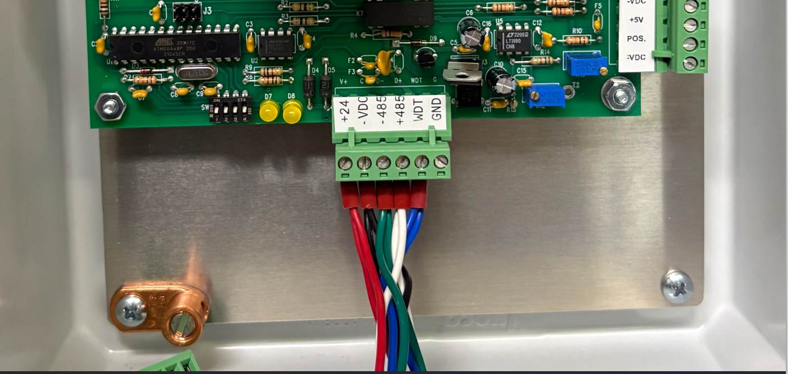
+24V, -24V, -485, +485, WDT wired in
- On A3009, bring the COM Port to the desired serial port to your computer.
- Turn on the breaker on the Test Rig.
Running the Bus Scanner
- On the test computer run the echobus program from: W:\MN\Control Systems\Software\Echo Bus and Bus Scanner\echobus.exe
- A web browser will open with localhost:5001.
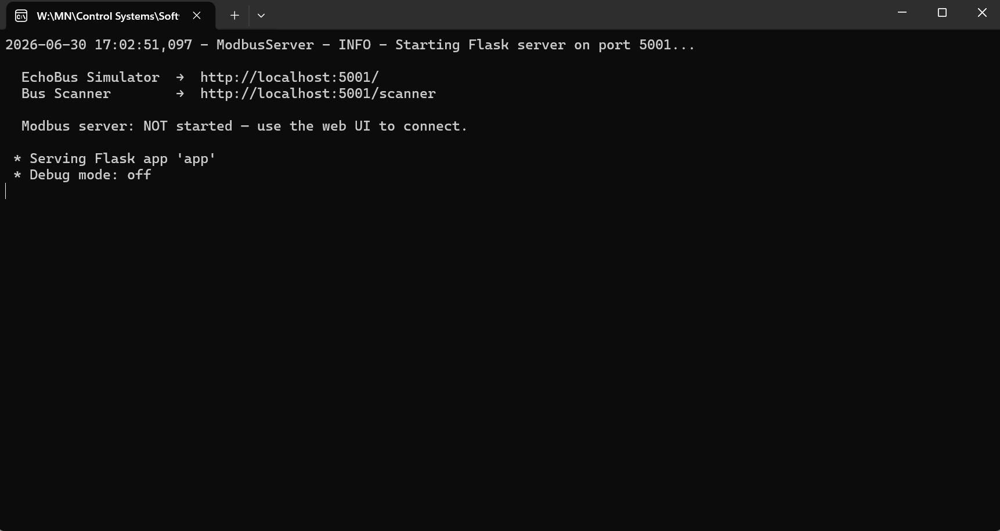
Echobus application running
- Under Pages click Bus Scanner to open the application.
- Alternate way of opening Bus Scanner is by entering http://localhost:5001/scanner in the browser.
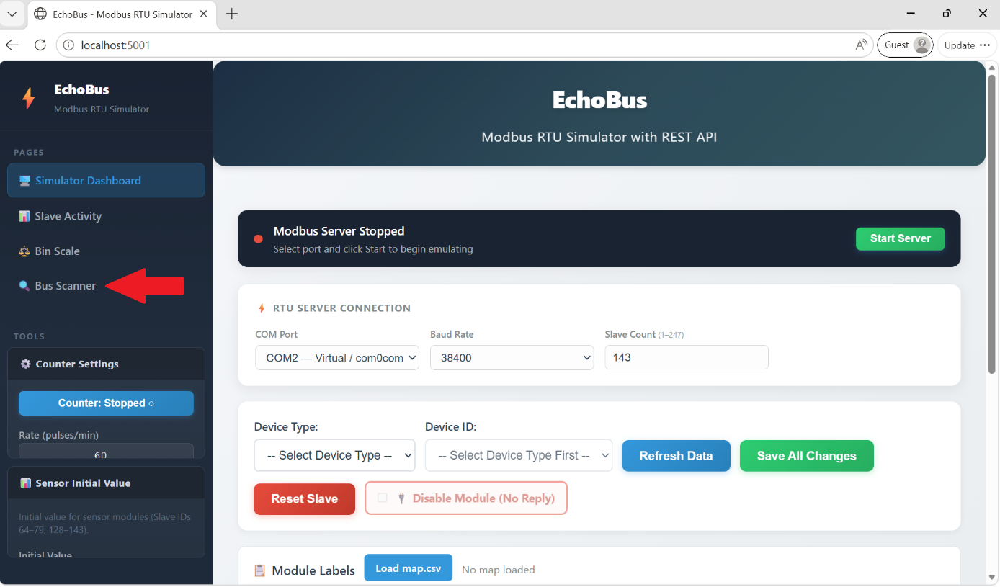
Bus Scanner found on the left side under Pages

- In the main screen, hover over COM Port and select the appropriate COM# being used from the Test Rig to the serial port, then click Connect.
- If the connection is not valid, the message "Cannot Open Com#" will appear.
- Verify the COM wiring on the test rig.
- Verify COM Port connection to the serial port.
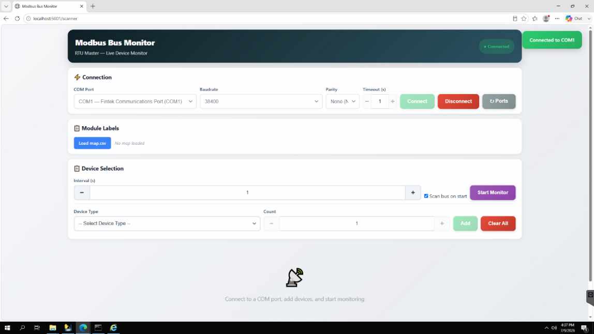
COM Port 1 connection successful
Device Selection
- On Device Type select MCU (16 devices).
- On the Count section add necessary number of MCUs to test.
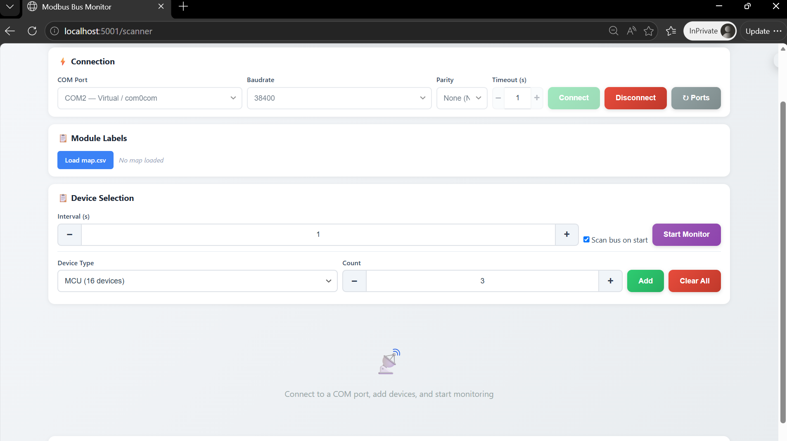
Count is selected for 3 MCUs to test for example
- Adjust the modbus dip switch address on the MCU based on the module number.
- E.g., MCU 0-2 set dip switches to 0, 1, and 2.
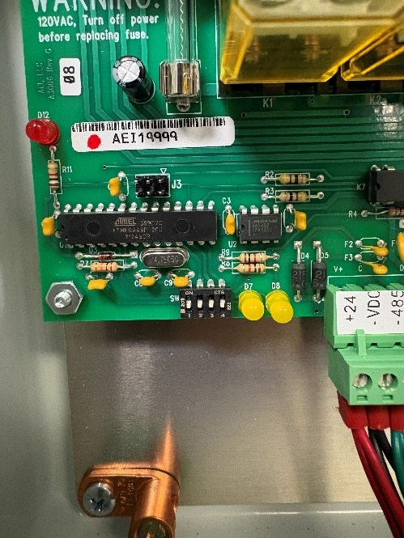
Modbus dip switch on MCU is set for module 0
- Click Add and Start Monitor.
Once the MCU device IDs are added and monitoring, the device ID of the MCU will be displayed and ready to test.
MCU Test
Static Pressure Test
- Use the signal generator and plug in the 6 position MCU Static Pressure tester at the top of the signal generator.
- At the other end of the MCU Static Pressure Tester, plug in the 6 position terminal block to the side of the MCU board.
- Turn on Signal Generator.
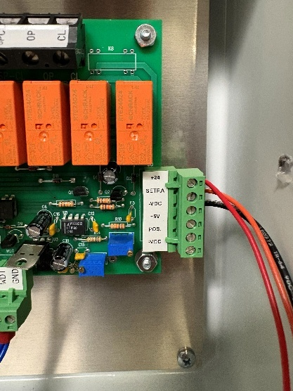
+24, SETRA, and -VDC plugged in for Static Pressure Test
- Set the signal generator to 2.50V.
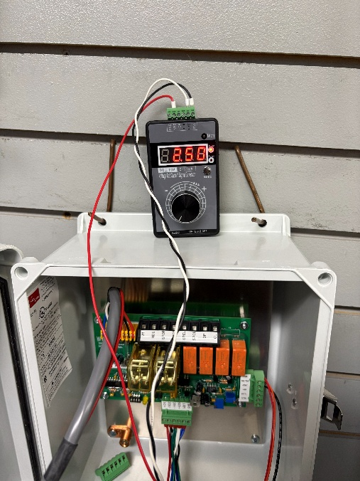
Signal generator set at 2.50V
- On the Bus Scanner, view the Static Press on the MCU module.
- Verify static pressure corresponds approximately to the signal generator value.
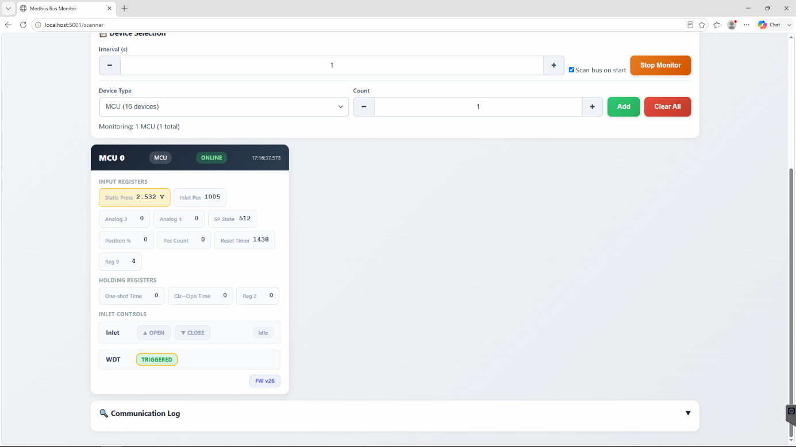
MCU 0 Module responding 2.532V, approximately to the signal generator
- Use the volt generator to test the rest of 0-5V on MCU.
- 3.50V
MCU 0 receiving 3.50V
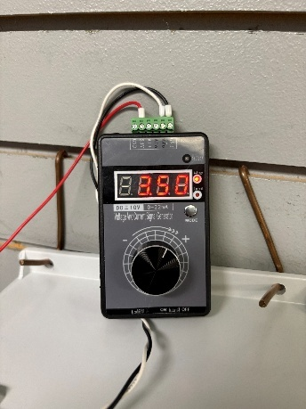
Signal Generator set to 3.50V
- 5.00V
MCU 0 receiving 5.00V
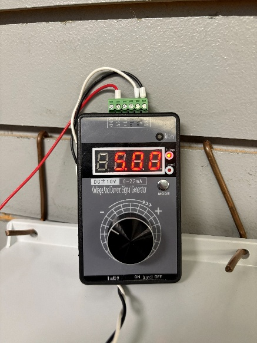
Signal Generator set to 5.00V
Open and Close Test
- On Bus Scanner hover to the MCU module and click Open.
MCU 0 on Open
- On the front door of the MCU:
- Ensure toggle switch is set to up on Computer.
- Observe if Inlet 1 is toggled to Open.
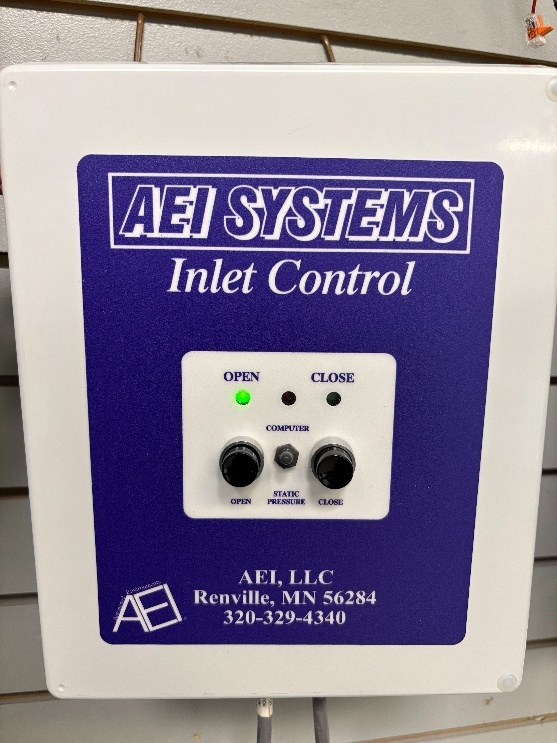
Inlet 1 on Open successfully
- On Bus Scanner, untoggle Open and click Close.
- MCU Module 0 on Close.
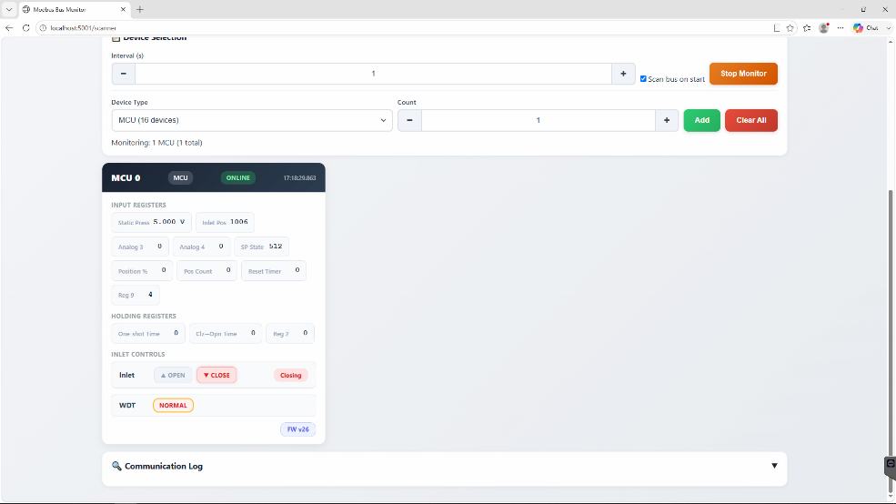
- MCU on corresponding Close state
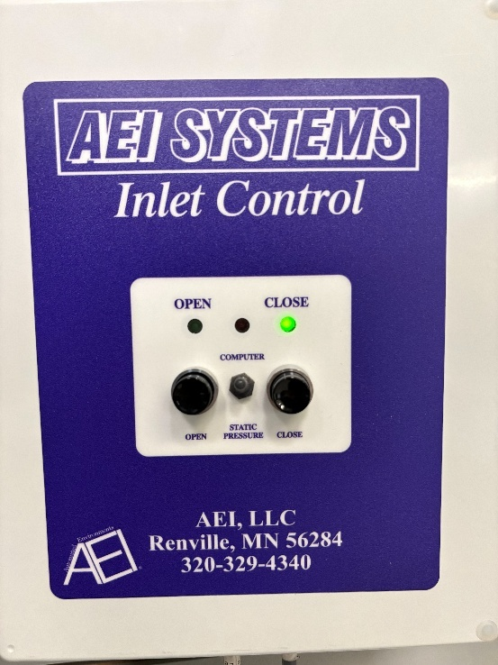
- After finishing the tests, if necessary, apply a label on the front cover of the MCU indicating module number and description based on customer map file.
- For example Module 0 Front
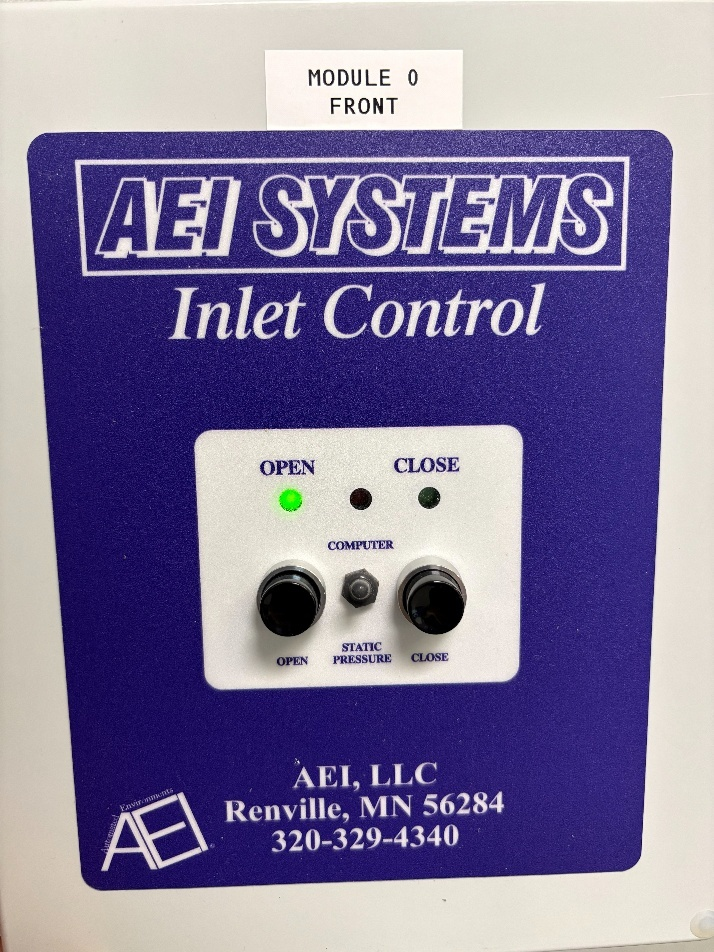